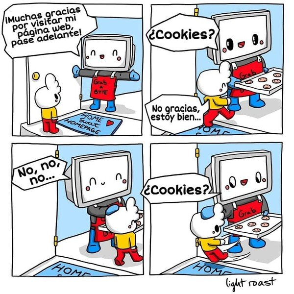

HTTP es un protocolo stateless (sin estado). Por ello, se simula el estado mediante el uso de cookies, tokens o sesiones. El estado es necesario para procesos tales como el carrito de la compra, operaciones asociadas a un usuario, etc... El mecanismo de PHP para gestionar la sesión emplea cookies de forma interna. Las cookies se almacenan en el navegador, y la sesión en el servidor web.
Las cookies se almacenan en el array global $_COOKIE. Lo que coloquemos dentro de este array, se guardará en el cliente
Aceptar cookies
Hay que tener presente que el cliente puede no querer almacenarlas.
Entra...cookies?
La mayoría de navegadores modernos, tienen una limitación de 180-200 cookies por dominio (siendo el tamaño máximo de cada cookie de 4KB) y 4000-8000 en total en el navegador.
En PHP, para crear una cookie se utiliza la función setcookie:
Destacar que el nombre no puede contener espacios ni el caracter ;.
Ejemplo
Por ejemplo, mediante cookies podemos comprobar la cantidad de visitas diferentes que realiza un usuario:
<?php$accesosPagina=0;if(isset($_COOKIE['accesos'])){$accesosPagina=$_COOKIE['accesos'];// recuperamos una cookiesetcookie('accesos',++$accesosPagina);// le asignamos un valor}?>
Inspeccionando las cookies
Si queremos ver que contienen las cookies que tenemos almacenadas en el navegador, se puede comprobar su valor en Dev Tools > Storage
Creamos fichero cookiesEjTmp.php en el que comprueba si se ha enviado el parámetro idioma, si es así, crea una cookie de nombre idioma, valor $_GET['idioma'], tiempo 1 hora y que trabaja desde la raíz \.
Además, se ha añadido una cabecera que redireccionará a la página cookiesEj.php:
El fichero, por ejemplo, cookiesEjVa.php quedaría:
<h2> idioma en valencià </h2><br /> <br /><a href="cookiesEj2BorrarCookies.php">borrar cookies</a>
El tiempo de vida de las cookies puede ser tan largo como el sitio web en el que residen. Ellas seguirán ahí, incluso si el navegador está cerrado o abierto.
Para borrar una cookie se puede poner que expiren en el pasado:
<?phpsetcookie(nombre,"",1)// pasado
O que caduquen dentro de un periodo de tiempo determinado:
<?phpsetcookie(nombre,valor,time()+3600)// Caducan dentro de una hora
Ejemplo 2
Siguiendo con el ejemplo anterior de idiomas, podríamos crear el fichero cookiesEj2BorrarCookies.php y, desde ahí, eliminar la cookie idioma:
La sesión añade la gestión del estado a HTTP, almacenando en este caso la información en el servidor. Cada visitante tiene un ID de sesión único; el cual por defecto se almacena en una cookie denominada PHPSESSID. Si el cliente no tiene las cookies activas, el ID se propaga en cada URL dentro del mismo dominio. Cada sesión tiene asociado un almacén de datos mediante el array global $_SESSION en el cual podemos almacenar y recuperar información.
La sesión comienza al ejecutar un script PHP. Se genera un nuevo ID y se cargan los datos del almacén:
Resultado de una segunda petición a servidor con sesiones.
El trabajo con sesiones tiene tres partes:
Creación o apertura de la sesión:
Cuando alguna página crea una sesión utilizando la cabecera session_start();(recuerda que las cabeceras deben ir justo después de <?php), el servidor asocia al navegador del usuario un identificador de usuario único. El identificador se guarda en el usuario en forma de cookie o, si el navegador del usuario no permite la creación de cookies, añadiendo el identificador en la dirección de la página.
Utilización de la sesión:
Si ya se ha creado la sesión, las páginas solicitadas por el mismo navegador pueden guardar y recuperar información en el servidor, información que se asocia al identificador de usuario, por lo que no es accesible a otros usuarios. La información se conserva hasta que el usuario o el servidor destruyan la sesión.
Destrucción o cierre de la sesión:
Tanto el usuario como el servidor pueden cerrar la sesión. El usuario puede destruir la sesión cerrando el navegador. El servidor puede destruir la sesión cuando alguna página utilice la función session_destroy(); o al cabo de un tiempo determinado (definido mediante la función session_set_cookie_params()).
Las operaciones que podemos realizar con la sesión son:
<?phpsession_start();// carga la sesiónsession_id()// devuelve el id$_SESSION[clave]=valor;// inserciónsession_destroy();// destruye la sesiónunset($_SESSION[clave]);// borrado
Utilización de sesión
Vamos a ver mediante un ejemplo cómo podemos insertar en un página datos en la sesión para posteriormente en otra página acceder a esos datos.
<?phpsession_start();// inicializamos$_SESSION["ies"]="IES Mestre Ramon Esteve";// asignación$instituto=$_SESSION["ies"];// recuperaciónecho"Estamos en el $instituto";?><br /><a href="sesion2.php">Y luego</a>
<?phpsession_start();$instituto=$_SESSION["ies"];// recuperaciónecho"Otra vez, en el $instituto";?>
Configurando la sesión en php.ini
Las siguientes propiedades de php.ini permiten configurar algunos aspectos de la sesión:
session.save_handler: controlador que gestiona cómo se almacena (valor files).
session.save_path: ruta donde se almacenan los archivos con los datos (si tenemos un cluster, podríamos usar /mnt/sessions en todos los servidores de manera que apuntan a una carpeta compartida).
session.name: nombre de la sesión (PHSESSID).
session.auto_start: Se puede hacer que se autocargue con cada script. Por defecto está deshabilitado.
session.cookie_lifetime: tiempo de vida por defecto.
Más información en la documentación oficial.
Cookie VS session
Las sesiones no deben confundirse con las cookies. Las cookies es un método que permite guardar información en el ordenador del cliente para recuperarla en el futuro; mientras que en las sesiones la información se mantiene en el servidor hasta que se cierra la sesión (por intervención del usuario o por tiempo). En el manual de PHP se ofrece un capítulo dedicado a las sesiones.
Ejemplo
He aquí un ejemplo gráfico de utilización de sesiones. Programa de dos páginas que muestra gráficamente los votos recogidos por dos opciones.
- La primera página contiene un formulario con tres botones de tipo submit con el mismo atributo name.
- Dos botones permiten votar a una u otra opción.
- El tercer botón pone a cero los contadores de votos.
- La segunda página recibe el dato, modifica la variable de sesión que contiene el número de votos de la opción elegida (o ambas) y redirige a la primera página.
- Los dos números se guardan en dos variables de sesión. Si las variables de sesión no están definidas, se les dará el valor 0.
- Las franjas correspondientes a los votos se alargan de 10px en 10px y no tienen límite de tamaño.
<?php// Accedemos a la sesiónsession_name("sesion1");session_start();// Si algún contador no está guardado en la sesión, ponemos ambos a ceroif(!isset($_SESSION["a"])||!isset($_SESSION["b"])){$_SESSION["a"]=$_SESSION["b"]=0;}?><!-- ... --><body><h2>Votar una opción</h2><form action="ps2.php" method="get"> <table> <tr> <td style="vertical-align: top;"> <button type="submit" name="accion" value="a" style="font-size: 60px; line-height: 50px; color: hwb(200 0% 0%);"> ✔ </button> </td> <td><?php// Dibujamos la primera barraprint" <svg width=\"$_SESSION[a]\" height=\"50\">\n";print" <line x1=\"0\" y1=\"25\" x2=\"$_SESSION[a]\" y2=\"25\" stroke=\"hwb(200 0% 0%)\" stroke-width=\"50\" />\n";print" </svg>\n";?> </td> </tr> <tr> <td> <button type="submit" name="accion" value="b" style="font-size: 60px; line-height: 50px; color: hwb(35 0% 0%)">✔ </button> </td><?php// Dibujamos la segunda barraprint" <td>\n";print" <svg width=\"$_SESSION[b]\" height=\"50\">\n";print" <line x1=\"0\" y1=\"25\" x2=\"$_SESSION[b]\" y2=\"25\" stroke=\"hwb(35 0% 0%)\" stroke-width=\"50\" />\n";print" </svg>\n";print" </td>\n";?> </tr> </table> <p> <button type="submit" name="accion" value="cero">Poner a cero</button> </p></form></body></html>
<?phpsession_name("sesion1");session_start();// Si alguno de los números de votos no está guardado en la sesión, redirigimos a la primera páginaif(!isset($_SESSION["a"])||!isset($_SESSION["b"])){header("Location:ps1.php");exit;}$accion=$_GET['accion'];// Dependiendo de la acción recibida, modificamos el número correspondienteif($accion=="a"){$_SESSION["a"]+=10;}elseif($accion=="b"){$_SESSION["b"]+=10;}elseif($accion=="cero"){$_SESSION["a"]=$_SESSION["b"]=0;}// Volvemos al formularioheader("Location:ps1.php");